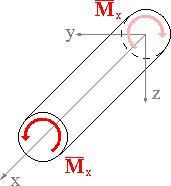
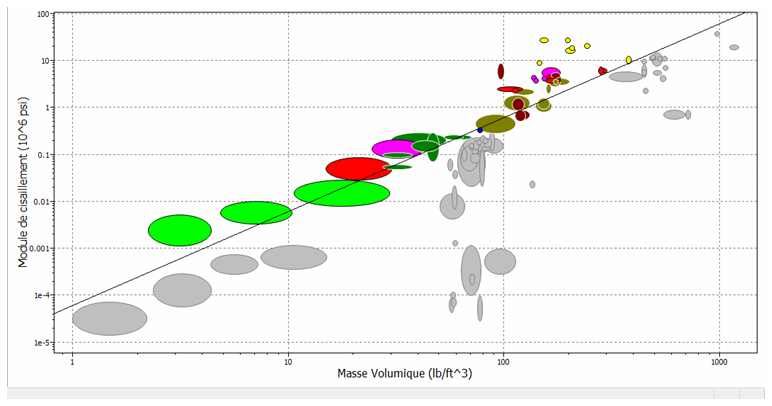
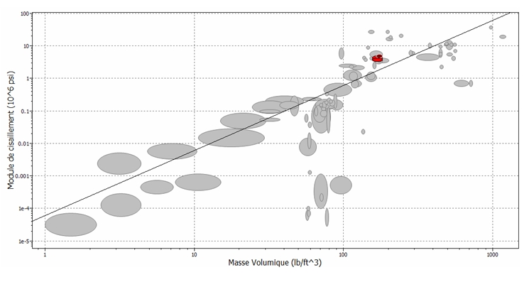
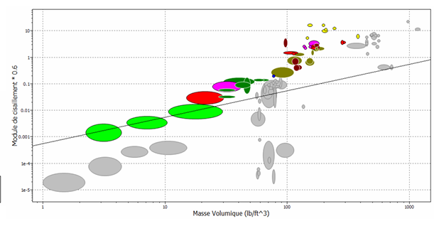
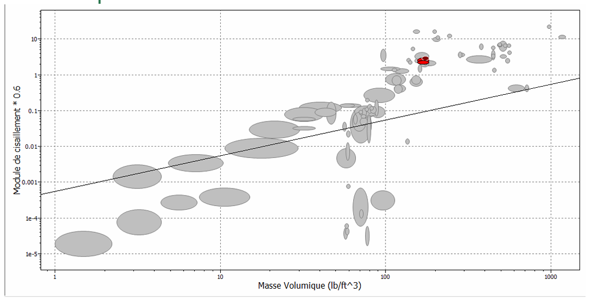

01 Introduction & Problématique
Dans de nombreuses applications industrielles telles que les transmissions mécaniques, les machines-outils et les systèmes automobiles, les arbres de transmission sont soumis principalement à des efforts de torsion. Ces arbres doivent transmettre un couple sans provoquer une déformation angulaire excessive, une rupture par cisaillement, ou une augmentation inutile de la masse du système.
Dans un contexte d'optimisation mécanique et énergétique, il est essentiel de choisir un matériau permettant de minimiser la masse tout en respectant les exigences de rigidité et de résistance en torsion. L'objectif de ce projet est d'appliquer la méthode des indices de performance d'Ashby afin de sélectionner le matériau optimal pour un arbre cylindrique plein soumis à une torsion pure.
02 Pièce étudiée & Applications
Pièce choisie :
Arbre cylindrique plein de transmission
Applications :
Arbre de transmission automobile
Arbre moteur
Transmission mécanique industrielle

Sollicitation dominante : Torsion pure
03 Cahier des charges fonctionnel
Fonction principale
Transmettre un couple mécanique C
Contraintes mécaniques
Limiter l'angle de torsion θ ≤ θmax
Éviter la rupture par cisaillement τ ≤ τadm
Objectif d'optimisation
Minimiser la masse m
Section circulaire pleine
Longueur imposée L
04 Modélisation mécanique
Hypothèses :
- Arbre cylindrique plein
- Comportement élastique linéaire
- Torsion pure (flexion et traction négligées)
Masse de l'arbre
m = ρV = ρπr²L
Moment polaire d'inertie
J = πr⁴ / 2

05 Indices de performance d'Ashby
RIGIDITÉ EN TORSION :
L'angle de torsion est donné par θ = CL / GJ. En appliquant la condition de rigidité θ ≤ θmax et en injectant le rayon dans l'expression de la masse, on obtient l'indice de performance.
Mise sous forme Ashby
m = ρ × (1/G)1/2
M₁ = G1/2/ρ
Indice — Rigidité en torsion
Plus M₁ est grand, plus le matériau est performant pour une structure rigide et légère en torsion.
RÉSISTANCE EN TORSION :
La contrainte de cisaillement maximale est τmax = Cr/J = 2C/πr³. En appliquant la condition τmax ≤ τadm et en simplifiant, on obtient :
Mise sous forme Ashby
m ∝ ρ / τadm
M₂ = τadm/ρ
Indice — Résistance en torsion
Un matériau avec un indice élevé résiste mieux à la rupture tout en restant léger.
06 Diagrammes d'Ashby
Diagramme 1 — Module de cisaillement G vs Densité ρ
Droite d'iso-performance : log G = 2 log ρ + log(C²) — Pente m = 2
Avant application de critère

Après application de critère

Matériaux validés :
Alliages d'aluminium pour fonderie, Alliages d'aluminium pour forgeage, Alliages de titane, Matrice d'aluminium renforcée (Al-SiC), Titane commercialement pur
Diagramme 2 — Limite élastique de cisaillement vs Densité ρ
Droite d'iso-performance : log τ = log ρ + const — Pente m = 1
Avant application de critère

Après application de critère

Matériaux validés :
Alliages d'aluminium pour fonderie, Alliages d'aluminium pour forgeage (×2), Matrice d'aluminium renforcée (Al-SiC)
07 Matériaux sélectionnés
Meilleure rigidité spécifique
Aluminium Al–SiC (10-40% SiC)
Composite à matrice métallique présentant une rigidité et une résistance supérieures grâce aux particules de SiC, tout en restant léger.
Rigidité en torsion très élevée
Angle de torsion minimal
Excellente rigidité spécifique
Meilleur rapport qualité/prix
Alliages Al pour forgeage (traitement thermique)
Bon compromis entre légèreté, résistance mécanique et facilité de mise en forme. Durcissement par traitement thermique améliorant la résistance.
Plus économique
Plus facile à usiner
Bonne résistance après traitement
08 Choix du facteur de forme
Le facteur d'efficacité de forme en torsion φT compare la capacité de torsion élastique (Wt) de différentes sections à aire égale par rapport à la section circulaire pleine de référence.
| Section | Facteur φT | Commentaire |
|---|---|---|
| Cercle Plein | 1,0 | La référence (standard). |
| Carré Plein | 0,74 | Mauvais : Gâchis de matière dans les angles. |
| Rectangle (2:1) | 0,50 | Très mauvais : Efficacité chute avec asymétrie. |
| Tube (épais) | 1,1 – 1,5 | Bon : Gain de poids significatif. |
| Tube (mince) | 2,0 – 5,0 | Excellent : Forme optimale pour la torsion. |
La symétrie est primordiale
Toute forme s'éloignant de la symétrie circulaire perd en efficacité (zones de contraintes nulles et de concentration).
L'éloignement radial
L'efficacité est proportionnelle à la distance moyenne de la matière par rapport à l'axe de torsion. C'est pourquoi le tube est la forme souveraine.
Le gauchissement
Pour les sections carrées, la section se déforme hors de son plan, ce qui diminue la rigidité de torsion.
Conclusion
Cette étude a permis de sélectionner de manière rationnelle le matériau et la géométrie d'un arbre soumis à la torsion. Les diagrammes d'Ashby ont conduit au choix de l'aluminium renforcé par carbure de silicium (Al–SiC) pour sa rigidité spécifique élevée. L'analyse du facteur de forme a montré que les sections fermées, en particulier le tube circulaire mince, sont les plus performantes en torsion. La vérification en résistance garantit la sécurité mécanique de la solution retenue.